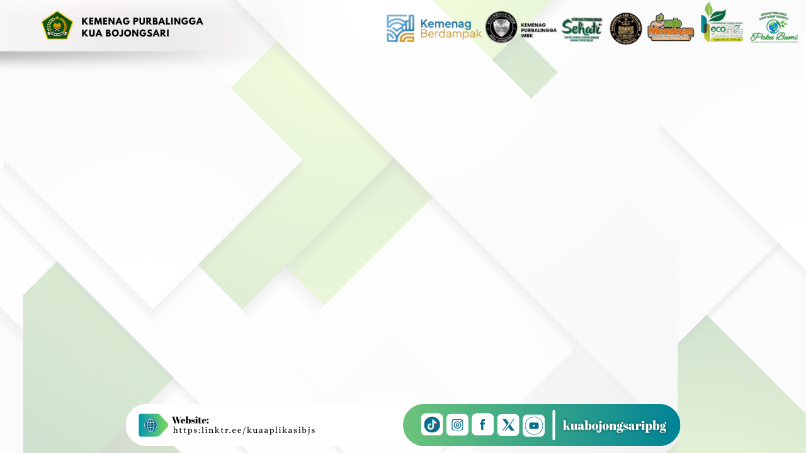
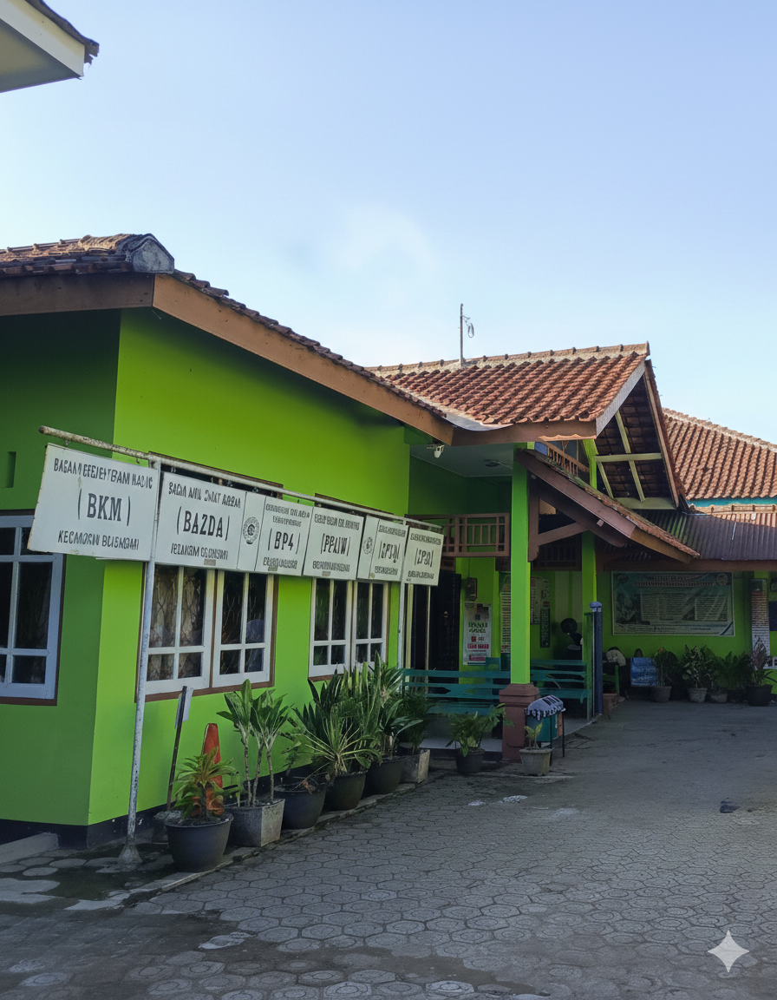
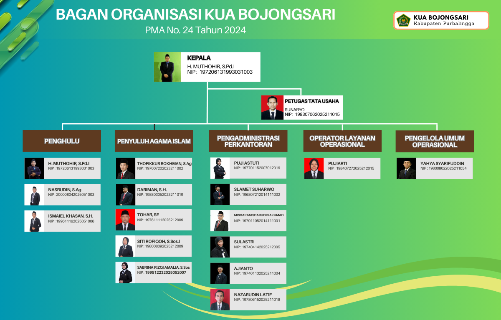
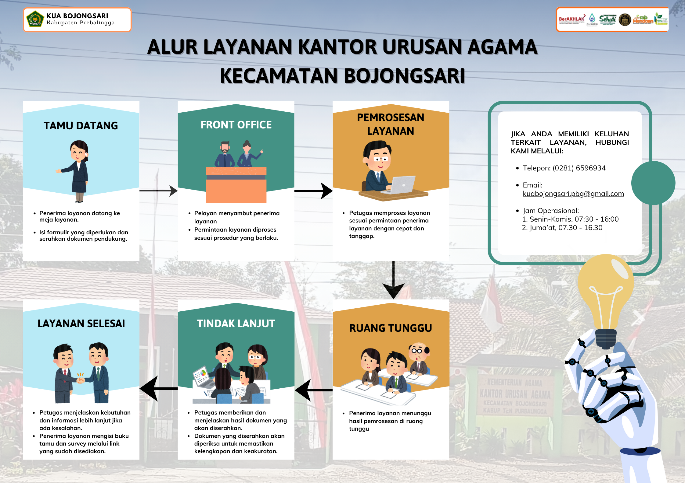

"Kantor Urusan Agama yang Profesional dan Andal dalam Membangun Masyarakat yang Saleh, Moderat, dan Unggul untuk Mewujudkan Bojongsari Maju yang Berdaulat, Mandiri, dan Berkepribadian Berdasarkan Gotong Royong"

Pelayanan, pengawasan, pencatatan, serta pelaporan pelaksanaan akad nikah dan rujuk di wilayah kerja kecamatan.
Penyelenggaraan bimbingan, pembinaan, serta edukasi berkelanjutan untuk mewujudkan ketahanan keluarga ke tingkat sakinah.
Fasilitasi pembinaan manajemen pengelolaan kemakmuran masjid (Idarah, Imarah, Walayah) serta administrasi ketakmiran.
Pelayanan bimbingan konsultasi keagamaan formal mengenai hukum-hukum syariat Islam secara inklusif kepada masyarakat.
Pelaksanaan koordinasi bimbingan kepenyuluhan keagamaan, penguatan kerukunan, serta penyiaran nilai moderasi beragama.
Pelayanan fasilitasi legalitas administrasi perwakafan tanah milik umat serta standarisasi lembaga pengelolaan zakat.
Penyediaan pelayanan data sektoral keagamaan serta integrasi sistem teknologi informasi informasi publik lokal.
Pelaksanaan urusan ketatausahaan, surat menyurat resmi, kearsipan dinas, kepegawaian internal, dan keuangan.

Penerima layanan datang ke meja layanan. Isi formulir yang diperlukan dan serahkan dokumen pendukung.
Pelayan menyambut penerima layanan. Permintaan layanan diproses sesuai prosedur yang berlaku.
Petugas memproses layanan sesuai permintaan penerima layanan dengan cepat dan tanggap.
Penerima layanan menunggu hasil pemrosesan di ruang tunggu yang telah disediakan nyaman.
Petugas memberikan dan menjelaskan hasil dokumen yang akan diserahkan. Diperiksa untuk kelengkapan.
Petugas menjelaskan kebutuhan informasi lebih lanjut. Penerima layanan mengisi buku tamu dan survey online.
🟢 Halo KUA Bojongsari: 0851-8506-3501 (Chat Only)
Jam Operasional Layanan: Senin - Kamis: 07:30 - 16:00 WIB | Jumat: 07:30 - 16:30 WIB
Kontak Telepon Kantor: (0281) 6596934 | Email Resmi: kuabojongsari.pbg@gmail.com